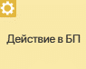
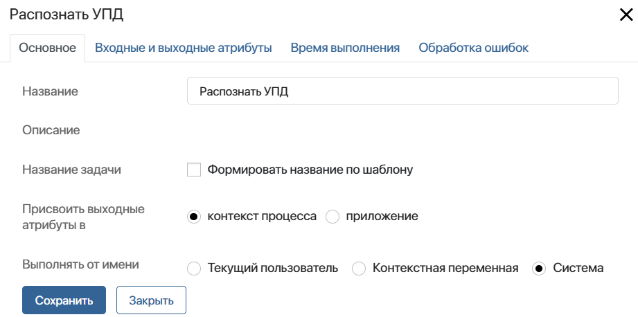
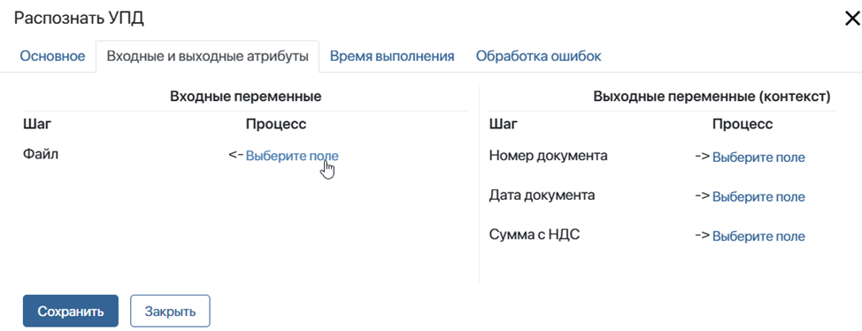
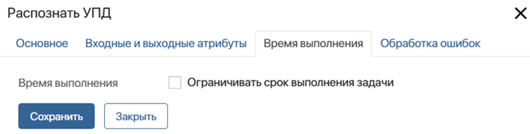
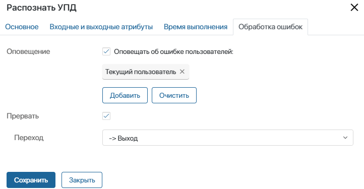

Блок создаётся в пользовательском модуле, где ему присваивается название, а также настраивается операция, которая выполняется в ходе его работы. Например, блок может запускать процесс, исполнять заданный скрипт или вызывать делегированное действие.
При включённом модуле графический элемент появляется в дизайнере бизнес-процессов на вкладке Интеграции. Тогда вы можете использовать его в любом пользовательском процессе. При этом действие, настроенное в блоке, будет выполняться только, когда модуль включён. Если запустить экземпляр процесса с выключенным модулем, пользователь получит оповещение об ошибке на этапе выполнения блока.
О создании и настройке операций в модулях читайте в статье «Действия в бизнес-процессах».
Рассмотрим подробнее, какие вкладки и опции доступны в таких графических элементах. Эти параметры могут отличаться в зависимости от типа действия и индивидуальных настроек блока, заданных при его создании.
Для примера настроим блок Распознать УПД, который выполняет действие типа Вызов процесса. С его помощью в ходе пользовательского процесса в файле формата .pdf распознаются нужные данные и записываются в контекстные переменные.
Предварительные настройки процесса
Сначала создайте переменные в контексте процесса, где будет использоваться блок. Через эти переменные данные из контекста процесса передаются в соответствующие атрибуты действия, настроенного в модуле.
Для этого в настройках блока переменные процесса сопоставляются с входными и выходными атрибутами действия. Таким образом для выполнения настроенного действия в блок передаются значения входных переменных, а результат этого действия записывается в выходные переменные.
В блоке Распознать УПД заданы следующие атрибуты:
- входные: Файл типа Файлы (один);
- выходные: Номер документа типа Число (целое), Дата документа типа Дата/время и Сумма с НДС типа Деньги.
Создайте соответствующие переменные в контексте процесса, в котором настраивается блок. Сопоставление этих переменных выполняется на вкладке Входные и выходные атрибуты.
Настройка блока
На странице процесса на правой панели инструментов перейдите на вкладку Интеграции. Перетащите блок Распознать УПД на схему и разместите его там, где нужно будет распознать электронный документ и передать его данные в переменные процесса.
Настройки блока выполняются на следующих вкладках: Основное, Входные и выходные атрибуты, Время выполнения и Обработка ошибок.
Вкладка «Основное»
На вкладке Основное указывается общая информация о действии.

- Название — введите название блока. Оно отобразится на схеме процесса;
- Описание — не требует заполнения. Здесь отображается описание действия, если это описание добавлялось при настройке скрипта, вызова процесса или делегированного действия;
- Название задачи — вы можете указать шаблон названия пользовательской задачи, если она формируется в блоке. Для этого включите опцию Формировать название по шаблону и задайте шаблон с помощью контекстных переменных так же, как в настройках элемента Задача;
- Присвоить выходные атрибуты в — укажите, куда будет записываться результат исполнения блока. Вы можете выбрать следующие опции:
- Контекст процесса — значения выходных атрибутов действия можно будет присвоить контекстным переменным бизнес-процесса;
- Приложение — значения выходных атрибутов действия можно будет присвоить полям приложения, добавленного в контекст бизнес-процесса;
- Переменная* — в контексте процесса выберите приложение, с полями которого будут сопоставляться выходные атрибуты действия;
- Выполнять от имени — опция доступна только для типа действия Вызов процесса. Выберите пользователя, который будет значиться инициатором действия в карточке экземпляра процесса:
- Текущий пользователь — пользователь, запустивший экземпляр процесса;
- Контекстная переменная — выберите переменную типа Пользователи (один) из контекста процесса. Действие выполнится от имени сотрудника, который указан в значении переменной. Например, вы можете выбрать контекстную переменную с пользователем, в чьей зоне ответственности стоит блок;
- Система — действие выполнится от имени пользователя, назначенного на роль Супервизор системы.
Вкладка «Входные и выходные атрибуты»
На этой вкладке атрибуты, заданные при создании блока, сопоставляются с контекстом процесса. На стандартной форме сопоставления в столбцах Шаг указаны входные и выходные атрибуты действия. В столбце Процесс в каждой из колонок вы можете выбрать переменные процесса, в котором действие используется. Для этого нажмите Выберите поле напротив входного или выходного атрибута действия и в выпадающем списке укажите переменную процесса. Сопоставлять можно переменные одного типа.

При создании блока в модуле вы можете настроить пользовательскую форму настроек действия, а также динамический биндинг — сопоставление переменных с помощью скрипта. В таких случаях вместо вкладки Входные и выходные атрибуты отобразится вкладка Настройки действия. Её заполнение будет зависеть от опций, заданных при создании блока.
Подробнее об этом читайте в статье «Биндинг и другие аспекты действий в бизнес-процессах».
Вкладка «Время выполнения»
Вкладка доступна в блоках действий типа Делегированное действие и Вызов процесса. Если с помощью графического элемента создаётся задача сотрудникам, вы можете указать временные ограничения на её выполнение и определить пользователей, которым придёт оповещение о нарушении заданных сроков. Настройки выполняются таким же образом, как в стандартных блоках типа Задача.

Вкладка «Обработка ошибок»
Для действий, созданных в пользовательском модуле, обязательно нужно добавлять переход по эскалации. Это позволит избежать возникновения ошибки при выполнении процесса, если модуль будет отключён. Также вы можете настроить оповещение пользователей об ошибке.

- Оповещение — выберите эту опцию, если вы хотите, чтобы ответственным исполнителям пришло оповещение в случае возникновения ошибки. Укажите этих пользователей: текущего пользователя, контекстную переменную, например, инициатора, группу или элемент оргструктуры. Обратите внимание, текущий пользователь — это человек, который выполнил задачу, стоящую перед действием на схеме процесса;
- Прервать — отметьте опцию, а затем в поле Переход укажите, по какой ветке направится процесс в случае возникновения ошибки. Указанный в этих настройках переход будет отмечен на схеме процесса значком .
После того как все настройки завершены, нажмите кнопку Сохранить.